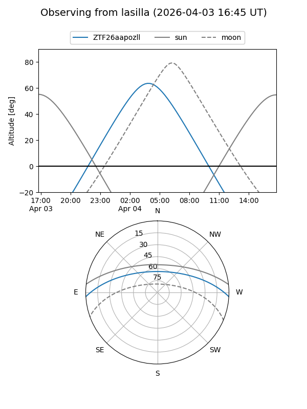
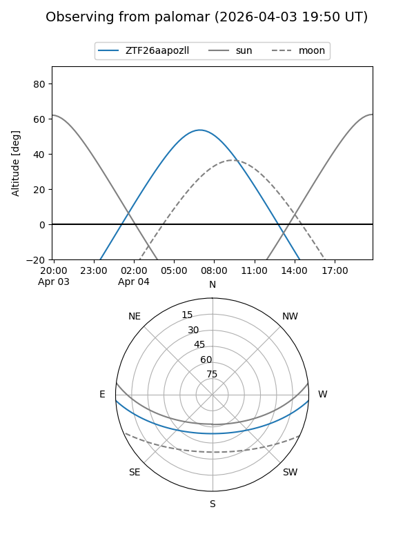

ZTF26aapozll
Target ZTF26aapozll at 2026-04-04 05:27
Aliases and brokers:
FINK: link
Lasair: link
ALeRCE: link
alt names
ZTF26aapozll (ztf,fink_ztf)
Coordinates:
equatorial (ra, dec) = 179.3817,-2.79865
equatorial (HMS+DMS) = 11:57:31.62,-02:47:55.14
galactic (l, b) = (277.3541,+57.37126)
Flags:
Photometry:
last ztfg=19.11
1 ztfg detections
Lightcurve
Visibility


Additional plots